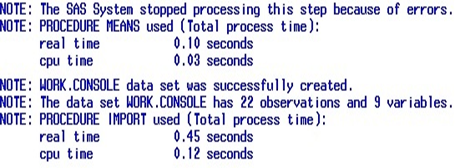
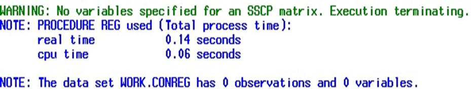
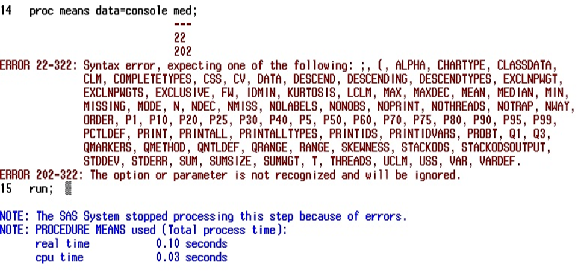

Debugging Techniques for SAS SAS SUGI Paper Completed Project 2013
This is a SUGI paper regarding multiple procedures and techniques for debugging and troubleshooting SAS.
Download:
SUGI PDF PowerpointTips and Tricks for Debugging SAS
The following topics are covered within the SUGI paper:
- Errors: Simple and Macro related
- Detailed Analysis of the SAS log
- Macro Debugging Techniques
Unfortunately, the code that was used to produced these results in the log could not be located.These will be replicated at some point in the future.
Below is a brief synopsis of these 3 points in the paper:
Simple Notes Within the SAS Log
Simple Warning Within the SAS Log
Simple Error Within the SAS Log
A great example of how SAS likes to point you in the right direction even if you have little to no clue where you want to go.
Marco Debugging Options Within the SAS Log
Showcasing MPrint, MLogic, and Symbolgen.